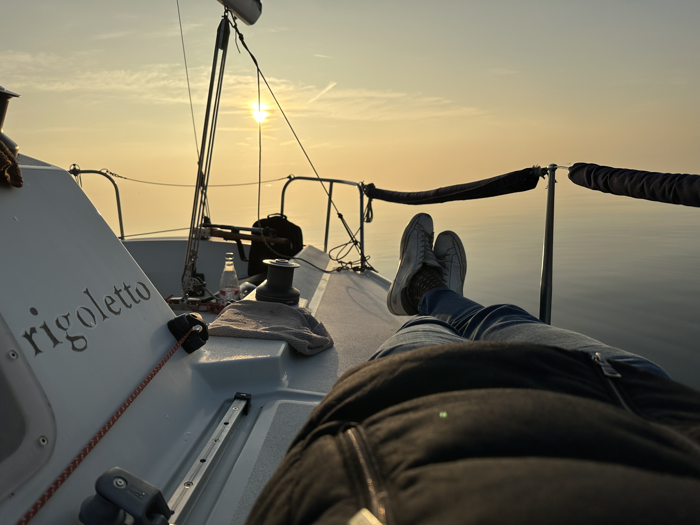

Relaxing Sailing
Stacca la spina e rigenerati. Un'esperienza esclusiva pensata per chi cerca quiete, armonia e la bellezza incontaminata del Lago di Garda.
“Mollate gli ormeggi. Lasciate i porti sicuri. Catturate il vento nelle vostre vele. Esplorate. Sognate. Scoprite.”
— Mark Twain —

Aperitivo e relax
Goditi il tramonto dorato dal centro del lago, sorseggiando un calice di vino locale cullato dal dolce movimento delle onde estive.

Crociera relax e bagno
Navigazione lenta alla scoperta delle baie più nascoste e suggestive del Garda, con soste dedicate a un bagno rigenerante in acque cristalline.

Disintossicazione digitale
Allontana lo stress quotidiano e spegni le notifiche. Respira l'aria del lago e ritrova il tuo equilibrio interno a contatto profondo con la natura.